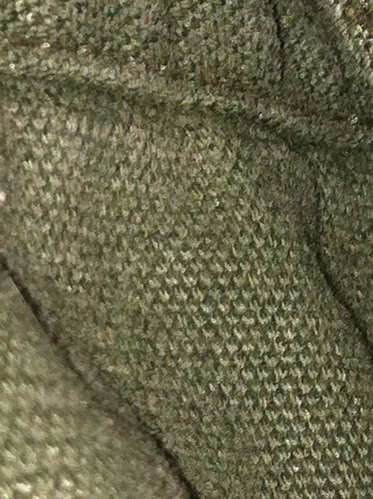
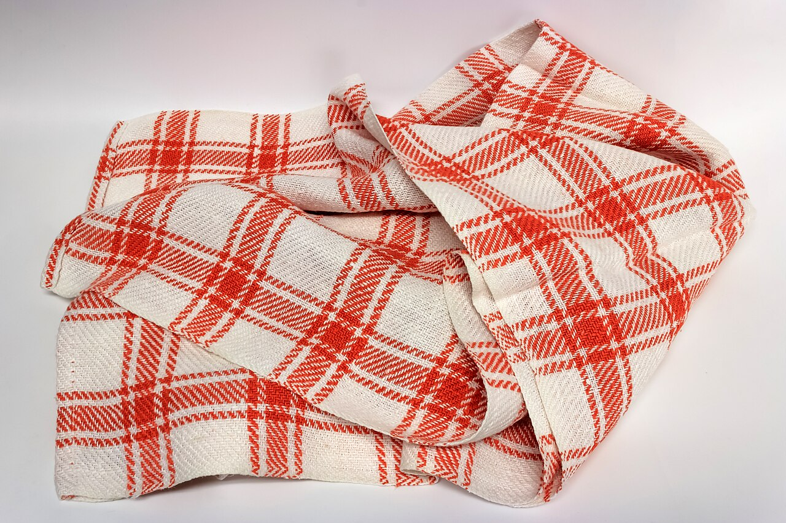
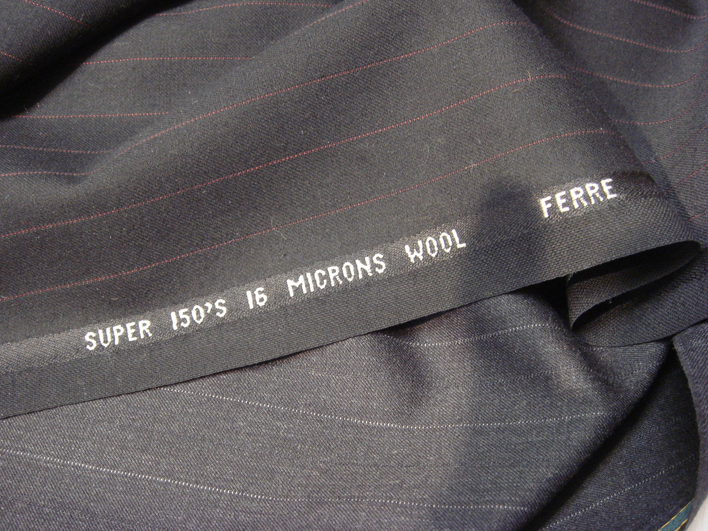
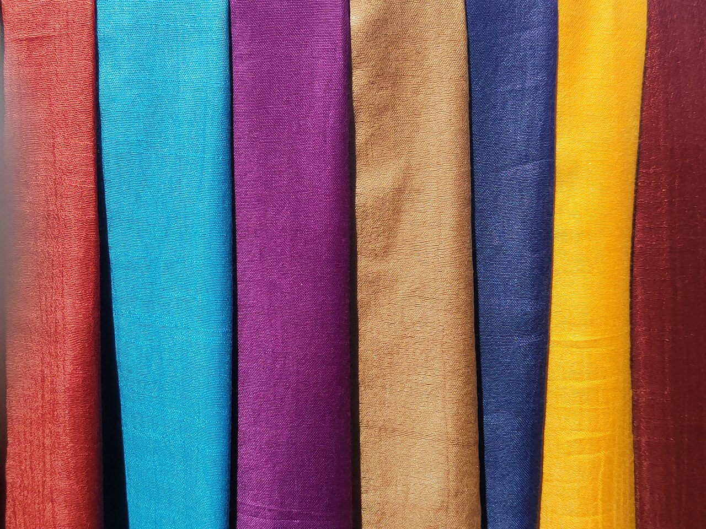
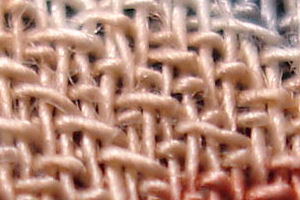
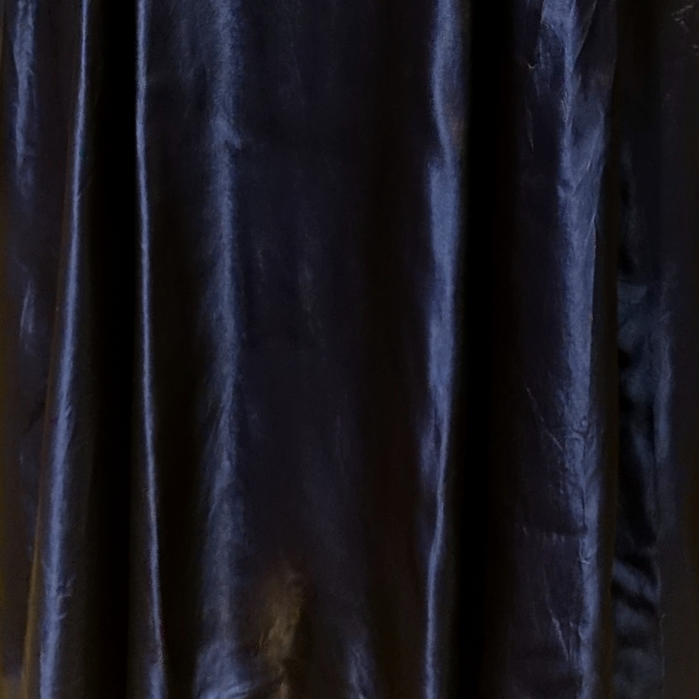

Хлопчатобумажная ткань

Хлопковая парусина: переплетение крупным планом.
Автор: Clescelius. CC BY-SA 3.0. Страница оригинала.

Уменьшенная версия Wikimedia для хлопка, льна и шёлка; остальные файлы без изменения пикселей.
Виды указаны по описаниям источников. Фотографии — иллюстрации, а не образцы с лабораторно подтверждённым составом. Они не используются для обучения ИИ или измерения его точности.

Хлопковая парусина: переплетение крупным планом.
Автор: Clescelius. CC BY-SA 3.0. Страница оригинала.
Уменьшенная версия Wikimedia для хлопка, льна и шёлка; остальные файлы без изменения пикселей.

Льняная скатерть Tampella. Рисунок и цвет не являются признаками состава.
Автор: W.carter / Ann-Sophie Qvarnström. CC BY-SA 4.0. Страница оригинала.
Уменьшенная версия Wikimedia для хлопка, льна и шёлка; остальные файлы без изменения пикселей.

Шерстяная костюмная ткань с кромкой.
Автор: Teslar. CC BY-SA 3.0. Страница оригинала.
Уменьшенная версия Wikimedia для хлопка, льна и шёлка; остальные файлы без изменения пикселей.

Шёлковые полотна разных цветов, по описанию автора.
Автор: Bhaiyaji Smile 123. CC BY-SA 4.0. Страница оригинала.
Уменьшенная версия Wikimedia для хлопка, льна и шёлка; остальные файлы без изменения пикселей.

Крупный план ткани rayon. Источник не уточняет способ производства; это иллюстрация, не подтверждённый вискозный эталон. Исходный размер — 300 × 200 пикселей.
Автор: Digitalgadget~commonswiki (по данным страницы). Public domain. Страница оригинала.
Уменьшенная версия Wikimedia для хлопка, льна и шёлка; остальные файлы без изменения пикселей.

Фрагмент ацетатного платья Laura Ashley из музейной коллекции, по описанию источника.
Автор: Daderot; кадрирование Arkirkland. CC0 1.0. Страница оригинала.
Уменьшенная версия Wikimedia для хлопка, льна и шёлка; остальные файлы без изменения пикселей.